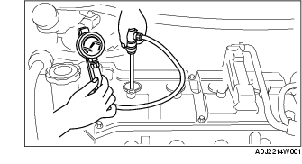

COMPRESSION INSPECTION [ZY]
id0110008003c0
-
Warning
-
• Hot engines can cause severe burns. Be careful not to burn yourself during removal/installation of each component.
-
• Fuel vapor is hazardous. It can very easily ignite, causing serious injury and damage. Always keep sparks and flames away from fuel.
-
• Fuel line spills and leakage are dangerous. Fuel can ignite and cause serious injuries or death and damage. Fuel can also irritate skin and eyes. To prevent this, always complete the 'Fuel Line Safety Procedure' when servicing the fuel system, and remove the circuit opening relay. (See BEFORE SERVICE PRECAUTION [ZY].)
1. Verify that the battery is fully charged. (See BATTERY INSPECTION [ZY].)
2. Warm up the engine to the normal operating temperature.
3. Stop the engine and leave it for approx.10 min to cool down the exhaust system.
4. Remove the fuel pump relay. (See BEFORE SERVICE PRECAUTION [ZY].)
5. Remove all the spark plugs. (See SPARK PLUG REMOVAL/INSTALLATION [ZY].)
6. Measure the compression pressure using the following procedure.
-
(1) Connect the compression gauge into the spark plug hole.

-
(2) Fully open the throttle valve.
-
(3) Crank the engine and measure the compression pressure.
Compression pressure
-
Standard: 1,520 kPa {15.5 kgf/cm2, 220 psi} [300 rpm]
-
Minimum: 1,064 kPa {10.9 kgf/cm2, 155 psi} [300 rpm]
-
Maximum difference between cylinders: 196.1 kP {2.0 kgf/cm2, 28.5 psi} a or less
-
(4) Perform Steps (1) to (3) all of the cylinders.
-
(5) If it is less than the minimum specification, or there is a cylinder with a compression value that varies from that of other cylinders by 196.1 kPa {2.0 kgf/cm2, 28.5 psi} or more perform Steps (1) to (3) adding a small quantity of engine oil from the spark plug hole.
-
• If the pressure increases by adding the engine oil, the piston ring or the cylinder surface is worn, or they are damaged. Perform overhaul servicing.
-
• If the pressure does not increase, valve seizure, valve attachment failure, or pressure leaking from the cylinder head gasket might be occurring. Perform overhaul servicing.
7. Install the spark plugs. (See SPARK PLUG REMOVAL/INSTALLATION [ZY].)
8. Install the circuit opening relay. (See BEFORE SERVICE PRECAUTION [ZY].)